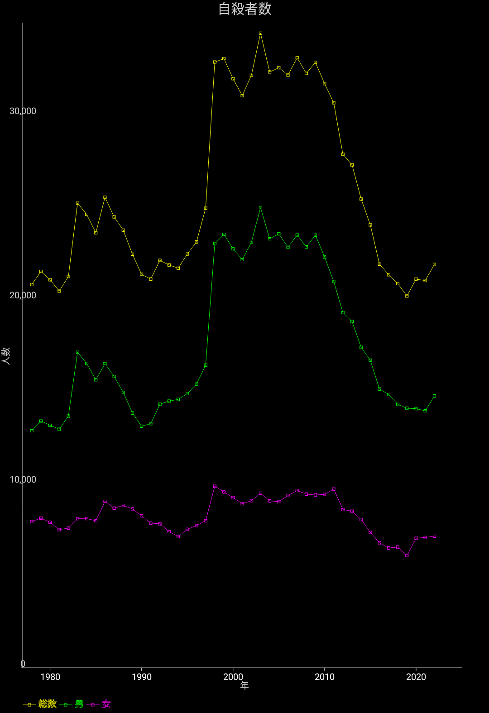

自殺者数の推移

厚生労働省の「自殺の統計」より、自殺者数の推移を見てみましょう。
自殺者数は90年代の後半に大きく跳ね上がり、その後2009年ごろまで高い水準を維持していました。
そのあと2009年をピークに大きく減少していっていて、現在ではほぼ急増前の水準に戻りつつあります。
90年代後半の急増はバブル崩壊の影響などと言われていますが、そのあと景況感が回復しても別段影響が無く高止まりしているのと、昨今急減している理由はあまり定説は無いようです。
2019年まで減少を続けたあと、2020年からまた少し増加の傾向が見られます。